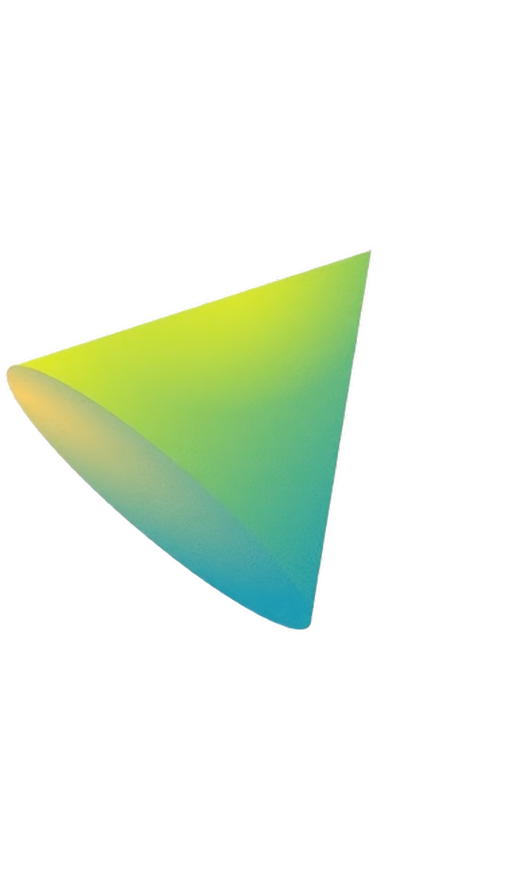
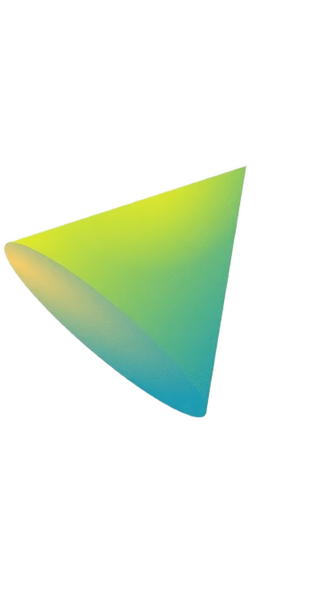

Patinhas Felizes está quase pronto para conectar milhares de pets com lares amorosos, mas precisamos de sua ajuda para dar o passo final!
Trabalhamos com dedicação para criar uma plataforma única que ajude animais a encontrar um lar, e estamos muito próximos do lançamento definitivo. Mas para garantir que o projeto tenha um impacto duradouro e seja seguro, confiável e acessível, precisamos da sua colaboração.
Objetivos das Doações:
Melhorias na Plataforma: Polir a experiência do usuário e garantir que ONGs e adotantes tenham uma navegação fácil e intuitiva.
Hospedagem e Segurança: Assegurar que os dados dos usuários estejam protegidos e o site, sempre disponível.
Alcance e Divulgação: Aumentar nossa visibilidade para alcançar o máximo de pessoas e ONGs possível.
Cada contribuição faz a diferença! Considere doar para que possamos, juntos, transformar vidas e espalhar o amor pelos pets.
 
